Capítulo 4 Métodos lineales de regresión
NOTA: Para los siguientes capítulos nos basaremos en los libros (Hastie, Tibshirani, and Friedman 2009) y (James et al. 2013).
4.1 Introducción al Aprendizaje Estadístico.
Supongamos que tenemos \(p\) variables de entrada que provocan una respuesta \(Y\) (variable dependiente) a través de la siguiente relación:
\[\begin{equation} Y = f(X_{1},\ldots,X_{p}) + \varepsilon \tag{4.1} \end{equation}\] donde \(f\) es desconocida, las variables \(X\)’s son las variables de entrada (covariables o predictores) y \(\varepsilon\) representa un error aditivo a la relación definida por \(f\).
Hay dos motivos por los que estimamos \(f\):
- Predicción: Si se estima \(f\) con \(\hat{f}\) entonces \[\begin{equation*} \hat{Y} = \hat{f}(X_{1},\ldots,X_{p}). \end{equation*}\] asumiendo que el valor medio del error \(\epsilon\) es cero. Si tuvieramos valores nuevos de los \(X\)’s entonces podríamos estimar el valor que el corresponde a \(Y\).
En este caso obtener una estructura óptima o precisa de la función \(\hat f\) no es importante, siempre y cuando sea posible obtener buenas predicciones de \(Y\). Para entender mejor esta idea se puede definir:
- Error reducible: Error de \(\hat{f}\) alrededor de \(f\), el cual es propio de la escogencia del modelo.
- Error irreducible: Error que escapa a una estimación perfecta de \(f\). Puede venir de covariables no consideradas en el problema, fuentes de error que no se pueden cuantificar, etc.
\[\begin{align*} \mathbb{E}\left[(\hat{Y}-Y\right)^2] &= \mathbb{E}\left[\left( f(X_{1},\ldots,X_{p}) + \varepsilon - \hat{f}(X_{1},\ldots,X_{p}) \right)^{2} \right] \\ &= \underbrace{\left( f(X_{1},\ldots,X_{p})- \hat{f}(X_{1},\ldots,X_{p}) \right) ^{2} }_{\text{Reducible}} +\underbrace{\mathrm{Var}\left(\varepsilon\right)}_{\text{irreducible}}. \end{align*}\] asumiendo que \(f\) y \(X\) son conocidas y determinísticas.
- Inferencia: Entender la relación entre \(X\) y \(Y\), es decir entender cómo \(Y\) cambia como función de las covariables. En este caso sí nos interesa obtener un estimador preciso e interpretable de la función \(f\). Las siguientes preguntas son de interés:
- ¿Cuáles covariables están asociadas con la variable respuesta o dependiente?
- ¿Cuál es la relación entre cada variable predictora y la respuesta?
- ¿La relación entre covariables y variable dependiente es lineal? o ¿la relación es más compleja?
4.1.1 Formas de estimar \(f\)
El proceso de estimación de \(f\) a través de \(\hat f\) se realiza sobre un subconjunto de los datos disponibles. A este conjunto se le llama datos de entrenamiento. El resto de los datos se puede utilizar para probar la capacidad predictiva del modelo seleccionado.
Existen varias clasificaciones de modelos para estimar \(f\):
- Modelos paramétricos vs modelos no parámetricos. Los modelos pueden tener parámetros que facilitan el proceso de estimación, pero el número de parámetros debe ser conservador para evitar situaciones de sobreajuste. Los modelos no-paramétricos requieren de mucha información para dar un buen ajuste, sea a través de una muestra grande o a través de manipular parámetros generales de suavidad (ancho de banda).
- Modelos predictivos vs modelos interpretativos. Entre más flexible (complejo) sea un modelo, más dificil es su interpretación, por lo tanto más dificil es hacer inferencia. Hay modelos muy flexibles que permiten hacer muy buena predicción, pero fácilmente se puede caer en sobreajuste.
- Modelos supervisados vs no supervisados. ¿La variable \(Y\) está disponible en la muestra?
- Modelos de regresión vs modelos de clasificación. ¿La variable \(Y\) es continua o es una variable categórica?
4.1.2 Medidas de bondad de ajuste
En el caso de regresión, la medida más utilizada es el Error Cuadrático Medio (MSE): \[\begin{align*} MSE=\frac 1 n \sum_{i=1}^n(y_i-\hat f(x_i))^2 \end{align*}\] calculada sobre la base de entrenamiento del modelo para evaluar la capacidad de ajuste de \(\hat f\). Para evaluar la capacidad predictiva del modelo se puede usar el mismo concepto sobre la base de prueba. La diferencia entre la magnitud del MSE en los dos conjuntos de datos, puede ser un indicador de sobreajuste.
Para el caso de un problema de aprendizaje estadístico hay interpretaciones de los componentes de sesgo y varianza:
- Varianza: variación de \(\hat f\) ante cambios en los datos de entrenamiento. Modelos más flexibles tienen mayor varianza.
- Sesgo: error al aproximar la realidad complicada con un modelo más simple. Modelos más flexibles tienen menor sesgo.
Estrategia de búsqueda de modelos: conforme aumenta la flexibilidad de un modelo el sesgo disminuye, y la varianza no aumenta en el mismo ritmo. A partir de un cierto momento la disminución del sesgo no es lo suficientemente fuerte como para contrarrestar el crecimiento en varianza.
Conclusión: un modelo parsimonioso posiblemente garantizará un valor óptimo en MSE.
4.2 Regresión lineal
El caso más sencillo es cuando se asume que la relación es lineal y se describe de la siguiente forma:
\[\begin{equation*} Y = \beta_{0} + \beta_{1}X_{1} + \cdots + \beta_{p}X_{p} + \varepsilon. \end{equation*}\]
Aquí los valores \(\beta\)’s son constantes a estimar, las variables \(X\)’s son las variables de entrada y \(\varepsilon\) es el error irreducible cometido por hacer esta aproximación.
Las covariables en un modelo de regresión pueden ser:
- Cuantitativas: variables continuas.
- Categóricas: variables tipo factor que admiten un número de niveles. Estas variables pueden ser ordinales o nominales, dependiendo si hay un orden natural en la escala de los niveles. Para incorporarla en el modelo de regresión debemos codificar la variable:
Ejemplo 4.1 Se tiene la variable \(G\) codificada con Casado (1), Soltero (2), Divorciado (3) y Unión Libre (4). Si queremos incorporar esta variable en una regresión podríamos usar la siguiente codificación:
\[\begin{equation*} X_{j} = \mathbf{1}_{\{G=j+1\}} \end{equation*}\]
que resulta en la matriz
\[\begin{equation*} \begin{matrix} X_{1} & X_{2} & X_{3}\\ 0 & 0 & 0 \\ 1 & 0 & 0 \\ 0 & 1 & 0 \\ 0 & 0 & 1 \\ \end{matrix} \end{equation*}\]
Existen otras formas de codificar este tipo de variables, pero esta es una de las más usuales.
4.2.1 Forma matricial
Podemos escribir el modelo de regresión en forma matricial:
\[\begin{equation*} \boldsymbol{Y} = \boldsymbol{X}\boldsymbol{\beta} + \boldsymbol{\varepsilon} \end{equation*}\]
donde
\[\begin{multline*} \boldsymbol{Y} = \begin{pmatrix} Y_{1} \\ \vdots \\ Y_{n} \end{pmatrix}_{n\times 1} \quad \boldsymbol{X} = \begin{pmatrix} 1 & X_{1,1} & \cdots & X_{p,1} \\ \vdots & \vdots & \cdots & \vdots\\ 1 & X_{1,n}& \cdots & X_{p,n} \end{pmatrix}_{n\times (p+1)} \\ \boldsymbol{\varepsilon} = \begin{pmatrix} \varepsilon_{1} \\ \vdots \\ \varepsilon_{n} \end{pmatrix}_{n\times 1} \quad \boldsymbol{\beta} = \begin{pmatrix} \beta_{0} \\ \beta_{1} \\ \vdots \\ \beta_{p} \end{pmatrix}_{(p+1)\times 1} \end{multline*}\]
Suponemos que \(\mathbb{E}\left[\varepsilon_{i}\right] = 0\) y \(\mathrm{Var}\left(\varepsilon_{i}\right) = \sigma^{2}\).
La forma de resolver este problema es por minimos cuadrados. Es decir, buscamos el \(\hat{\beta}\) que cumpla lo siguiente:
\[\begin{align} \hat{\beta} &= \operatorname{argmin}_\beta (\boldsymbol{Y} - \boldsymbol{X} \boldsymbol{\beta})^{\top} (\boldsymbol{Y} - \boldsymbol{X} \boldsymbol{\beta})\\ &= \operatorname{argmin}_\beta \sum_{i=1}^n \left( Y_{i} -\beta_{0} - \sum_{j=1}^p X_{j,i} \beta_{j} \right)^2 \tag{4.2} \end{align}\]
 Por lo tanto buscaríamos minimizar la suma de residuos al cuadrado.
Por lo tanto buscaríamos minimizar la suma de residuos al cuadrado.
Suponga que \(\gamma\) es un vector cualquiera en \(\mathbb{R}^{p+1}\) y defina \(V := \{\boldsymbol{X}\boldsymbol{\gamma}, \gamma \in \mathbb{R}^{p+1}\}\), es decir el espacio lineal generado por las columnas (covariables) de \(\boldsymbol{X}\). Buscamos entonces un vector \(\beta\) que cumpla:
\[\begin{align*} \boldsymbol{X}\boldsymbol{\beta} &= \operatorname{Proy}_{V} \boldsymbol{Y} \end{align*}\]
Entonces dado que \(\boldsymbol{Y}-\boldsymbol{X}\boldsymbol{\beta} \perp V\), es decir \(\boldsymbol{Y}-\boldsymbol{X}\boldsymbol{\beta} \perp \boldsymbol{X}\boldsymbol{\gamma}, \forall \boldsymbol{\gamma} \in \mathbb{R}^{p+1}\) entonces:
\[\begin{align*} \boldsymbol{X}\boldsymbol{\gamma} \cdot \left(\boldsymbol{Y}-\boldsymbol{X}\boldsymbol{\beta}\right) &= 0 \\ \boldsymbol{\gamma}^{\top}\boldsymbol{X}^{\top}(\boldsymbol{Y}-\boldsymbol{X}\boldsymbol{\beta}) &= 0 \\ \boldsymbol{\gamma}^{\top}\boldsymbol{X}^{\top}\boldsymbol{Y} &= \boldsymbol{\gamma}^{\top} \boldsymbol{X}^{\top} \boldsymbol{X}\boldsymbol{\beta} \\ \boldsymbol{X}^{\top}\boldsymbol{Y} &= \boldsymbol{X}^{\top} \boldsymbol{X}\boldsymbol{\beta} \\ \boldsymbol{\beta} &= (\boldsymbol{X}^{\top} \boldsymbol{X})^{-1} \boldsymbol{X}^{\top}\boldsymbol{Y} \end{align*}\]
Donde se asume que \(\boldsymbol{X}^{\top} \boldsymbol{X}\) debe ser invertible. Si no es así, se puede construir su inversa generalizada pero no garantiza la unicidad de los \(\beta\)’s. Es decir, puede existir \(\hat{\beta} \neq \tilde{\beta}\) tal que \(\boldsymbol{X}\boldsymbol{\hat{\beta}} = \boldsymbol{X}\boldsymbol{\tilde{\beta}}\). A \(\hat \beta\) se le llama estimador por mínimos cuadrados de \(\beta\).
En el caso de predicción tenemos que
\[\begin{align*} \hat{Y} &= X\hat \beta \\ &= \boldsymbol{X}(\boldsymbol{X}^{\top} \boldsymbol{X})^{-1} \boldsymbol{X}^{\top}\boldsymbol{Y} \\ &= H \boldsymbol{Y} \end{align*}\]
Donde \(H\) es la matriz “techo” o “hat”. La matriz \(H\) es la matriz de proyección de Y al espacio de las columnas de \(X\).
Ejercicio 4.1 Suponga que tenemos la regresión simple
\[\begin{equation*} Y = \beta_{0} + \beta_{1}X_{1}+\varepsilon. \end{equation*}\]
Verifique que los estimadores de mínimos cuadrados de \(\beta_{0}\) y \(\beta_{1}\) son:
\[\begin{align*} \hat{\beta}_{1}&= \frac{\sum_{i=1}^{n}\left(X_{i}-\overline{X}\right)\left(Y_{i}-\overline{Y}\right)}{\sum_{i=1}^{n}\left(X_{i}-\overline{x}\right)^{2}} \\ \hat{\beta}_{0}&= \bar{Y}-\widehat{\beta}_{1} \bar{X} \end{align*}\]
usando los siguiente métodos:
- El método de proyecciones.
- Aplicando el criterio de mínimos cuadrados. Ecuación (4.2).
4.2.2 Laboratorio
Usemos la base mtcars para los siguientes ejemplos. Toda la información de esta base se encuentra en ?mtcars.
mtcars <- within(mtcars, {
vs <- factor(vs, labels = c("V-Shape", "Straight-Line"))
am <- factor(am, labels = c("automatic", "manual"))
cyl <- factor(cyl)
gear <- factor(gear)
carb <- factor(carb)
})
head(mtcars)## mpg cyl disp hp drat wt qsec vs am
## Mazda RX4 21.0 6 160 110 3.90 2.620 16.46 V-Shape manual
## Mazda RX4 Wag 21.0 6 160 110 3.90 2.875 17.02 V-Shape manual
## Datsun 710 22.8 4 108 93 3.85 2.320 18.61 Straight-Line manual
## Hornet 4 Drive 21.4 6 258 110 3.08 3.215 19.44 Straight-Line automatic
## Hornet Sportabout 18.7 8 360 175 3.15 3.440 17.02 V-Shape automatic
## Valiant 18.1 6 225 105 2.76 3.460 20.22 Straight-Line automatic
## gear carb
## Mazda RX4 4 4
## Mazda RX4 Wag 4 4
## Datsun 710 4 1
## Hornet 4 Drive 3 1
## Hornet Sportabout 3 2
## Valiant 3 1summary(mtcars)## mpg cyl disp hp drat
## Min. :10.40 4:11 Min. : 71.1 Min. : 52.0 Min. :2.760
## 1st Qu.:15.43 6: 7 1st Qu.:120.8 1st Qu.: 96.5 1st Qu.:3.080
## Median :19.20 8:14 Median :196.3 Median :123.0 Median :3.695
## Mean :20.09 Mean :230.7 Mean :146.7 Mean :3.597
## 3rd Qu.:22.80 3rd Qu.:326.0 3rd Qu.:180.0 3rd Qu.:3.920
## Max. :33.90 Max. :472.0 Max. :335.0 Max. :4.930
## wt qsec vs am gear
## Min. :1.513 Min. :14.50 V-Shape :18 automatic:19 3:15
## 1st Qu.:2.581 1st Qu.:16.89 Straight-Line:14 manual :13 4:12
## Median :3.325 Median :17.71 5: 5
## Mean :3.217 Mean :17.85
## 3rd Qu.:3.610 3rd Qu.:18.90
## Max. :5.424 Max. :22.90
## carb
## 1: 7
## 2:10
## 3: 3
## 4:10
## 6: 1
## 8: 1Observemos las relaciones generales de las variables de esta base de datos
ggplot(mtcars) + geom_point(aes(wt, mpg)) + theme_minimal()El objetivo es tratar la eficiencia del automóvil mpg con respecto a su peso wt.
Usaremos una regresión lineal para encontrar los coeficientes.
Primero hay que construir la matriz de diseño
X <- mtcars$wt
head(X)## [1] 2.620 2.875 2.320 3.215 3.440 3.460Y <- mtcars$mpg
head(Y)## [1] 21.0 21.0 22.8 21.4 18.7 18.1(beta1 <- solve(t(X) %*% X) %*% t(X) %*% Y)## [,1]
## [1,] 5.291624dfreg <- data.frame(x = X, yreg = X %*% beta1) %>%
arrange(x)ggplot(data = data.frame(x = X, y = Y)) + geom_point(aes(x,
y)) + geom_line(data = dfreg, aes(x, yreg), color = "red") +
theme_minimal()en donde podemos concluir que la relación lineal no modela de manera apropiada la relación observada en los datos. Por lo tanto es necesario incluir el intercepto \(\beta_0\) al modelo lineal:
X <- cbind(1, mtcars$wt)
head(X)## [,1] [,2]
## [1,] 1 2.620
## [2,] 1 2.875
## [3,] 1 2.320
## [4,] 1 3.215
## [5,] 1 3.440
## [6,] 1 3.460Y <- mtcars$mpg
head(Y)## [1] 21.0 21.0 22.8 21.4 18.7 18.1(beta01 <- solve(t(X) %*% X) %*% t(X) %*% Y)## [,1]
## [1,] 37.285126
## [2,] -5.344472dfreg <- data.frame(x = X, yreg = X %*% beta01) %>%
arrange(x.2)ggplot(data = data.frame(x0 = X[, 1], x1 = X[, 2],
y = Y)) + geom_point(aes(x1, y)) + geom_line(data = dfreg,
aes(x.2, yreg), color = "red") + theme_minimal()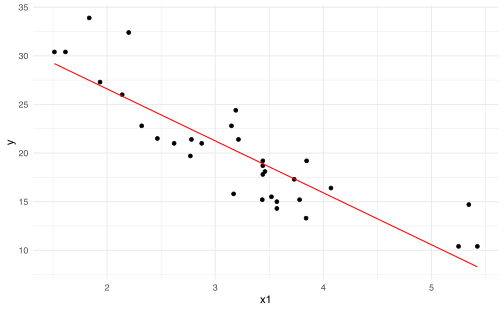
El mismo resultado se puede obtener a través del comando :
lm(mpg ~ -1 + wt, data = mtcars)##
## Call:
## lm(formula = mpg ~ -1 + wt, data = mtcars)
##
## Coefficients:
## wt
## 5.292lm(mpg ~ wt, data = mtcars)##
## Call:
## lm(formula = mpg ~ wt, data = mtcars)
##
## Coefficients:
## (Intercept) wt
## 37.285 -5.344Suponga que queremos trabajar con la variable categorica cyl (Número de cilindros) como única covariable. Lo que se debe hacer es codificar la variable categórica:
X <- model.matrix(mpg ~ cyl, data = mtcars)
head(X)## (Intercept) cyl6 cyl8
## Mazda RX4 1 1 0
## Mazda RX4 Wag 1 1 0
## Datsun 710 1 0 0
## Hornet 4 Drive 1 1 0
## Hornet Sportabout 1 0 1
## Valiant 1 1 0(betas <- solve(t(X) %*% X) %*% t(X) %*% Y)## [,1]
## (Intercept) 26.663636
## cyl6 -6.920779
## cyl8 -11.563636(cylreg <- lm(mpg ~ cyl, data = mtcars))##
## Call:
## lm(formula = mpg ~ cyl, data = mtcars)
##
## Coefficients:
## (Intercept) cyl6 cyl8
## 26.664 -6.921 -11.564(betaslm <- coefficients(cylreg))## (Intercept) cyl6 cyl8
## 26.663636 -6.920779 -11.563636# Efecto cyl4: cyl4 = 1, cyl6 = 0, cyl8 = 0
betaslm[1]## (Intercept)
## 26.66364# Efecto cyl6: cyl4 = 1, cyl6 = 1, cyl8 = 0
betaslm[1] + betaslm[2]## (Intercept)
## 19.74286# Efecto cyl8: cyl4 = 1, cyl6 = 0, cyl8 = 1
betaslm[1] + betaslm[3]## (Intercept)
## 15.14.3 Propiedades estadísticas
Hasta ahora se han hecho pocos supuestos acerca de la distribución de los datos. Si asumimos que las observaciones \(Y_i\) son no correlacionadas y que tienen varianza constante \(\sigma^2\) y además las covariables son fijas (no aleatorias), entonces:
\[\begin{align*} E[\hat \beta]&=(\boldsymbol{X}^{\top} \boldsymbol{X})^{-1} \boldsymbol{X}^{\top}E[\boldsymbol{Y}] \\ &=(\boldsymbol{X}^{\top} \boldsymbol{X})^{-1} \boldsymbol{X}^{\top}\boldsymbol{X}\beta\\ &=\beta \\ \text{Var}[\hat \beta] &= (\boldsymbol{X}^{\top} \boldsymbol{X})^{-1} \boldsymbol{X}^{\top}\text{Var}[\boldsymbol{Y}] ((\boldsymbol{X}^{\top} \boldsymbol{X})^{-1} \boldsymbol{X}^{\top})^{\top} \\ & = \sigma^2 (\boldsymbol{X}^{\top} \boldsymbol{X})^{-1} \end{align*}\]
Note que \(\sigma^{2}\) puede ser estimado a través de:
\[\begin{align*} \hat{\sigma}^{2} &= \frac{1}{n-p-1} \sum_{i=1}^{n} \left( Y_{i} - \hat{Y}_{i}\right)^{2} \\ &= \frac{1}{n-p-1}\left\Vert Y - X\hat{\beta} \right\Vert^{2} \\ &= \frac{1}{n-p-1} \left\Vert Y-\operatorname{Proy}_{V}Y \right\Vert^{2} \end{align*}\]
Otra forma de verlo es \[\begin{align*} Y-\operatorname{Proy}_{V}Y &= X\beta + \varepsilon - \operatorname{Proy}_{V}( X\beta + \varepsilon) \\ &= X\beta - \operatorname{Proy}_{V}( \underbrace{X\beta}_{\in V}) + \varepsilon - \underbrace{\operatorname{Proy}_{V}( \varepsilon)}_{=0} \\ &= X\beta -X\beta + \varepsilon \\ &= \operatorname{Proy}_{V^{\top}}( \varepsilon) \end{align*}\]
\[\begin{equation*} \hat{\sigma}^{2} = \frac{1}{\operatorname{dim}(V^{\top})}\left\Vert \operatorname{Proy}_{V^{\top}}\varepsilon\right\Vert \\ \end{equation*}\]
Cumple con la propiedad que \(\mathbb{E}\left[\hat{\sigma}^{2}\right] = \sigma^{2}\) (estimador insesgado).
Para poder hacer inferencia sobre \(\beta\) y \(\sigma^2\) se puede asumir además que los errores son gaussianos:
\[\begin{equation*} \varepsilon\sim \mathcal{N}\left(0,\sigma^{2}I\right). \end{equation*}\]
y de esta forma se obtiene:
\[\begin{equation*} Y = X\beta + \varepsilon \sim \mathcal{N}\left(X\beta,\sigma^{2}I\right) \end{equation*}\]
Y además:
\[\begin{align*} \hat{\beta} \sim \mathcal{N}\left(\beta,\sigma^2 (X^{\top}X)^{-1}\right) \end{align*}\]
Por otro lado se puede comprobar que: \[(n-p-1)\hat{\sigma}^{2} \sim \sigma^{2} \chi^{2}_{n-p-1}.\] y además se puede comprobar que \(\hat \beta\) y \(\hat \sigma^2\) son independientes.
Ejercicio 4.2 Encuentre la varianza para \(\hat \beta_{0}\) y \(\hat \beta_{1}\) para el caso de la regresión simple.
4.3.1 Prueba \(t\)
La significancia de los parámetros \(\beta_j\) se puede verificar a través de la siguiente prueba de hipótesis:
\[\begin{equation*} H_{0}: \beta_{j} = 0 \quad \text{ vs } \quad H_{1}:\beta_{j}\neq 0. \end{equation*}\]
En donde el estadístico de prueba es:
\[\begin{equation*} z_{j} = \frac{\hat{\beta}_{j}}{\hat{\sigma} \sqrt{v_{j}}} \end{equation*}\]
donde \(v_{j}\) es el \(j\)-esimo elemento de la diagonal de \((X^{\top}X)^{-1}\).
Bajo \(H_{0}\): \(z_{j} \sim t_{n-p-1}\) y se rechaza \(H_{0}\) al nivel \(\alpha\) si:
\[\begin{equation*} \left\vert z_{j} \right\vert > t_{n-p-1, 1-\frac{\alpha}{2}} \end{equation*}\]
4.3.2 Prueba \(F\)
Si uno busca medir la significancia de todos los parámetros \(\beta_j\) de forma simultánea, excepto el intercepto. En este caso podemos definir la siguiente hipótesis nula: \[\begin{equation*} H_{0}: \beta_{1} = \cdots =\beta_{p} = 0 \quad \text{ vs }\quad H_{1}: \text{ al menos un \(\beta\) no es cero}. \end{equation*}\]
Lo cual es equivalente a comparar el modelo nulo \(Y=\beta_{0}+\varepsilon\) contra el modelo completo \(Y=\beta_{0}+ \beta_{1}X_{1} + \cdots + \beta_{p}X_{p} + \varepsilon\).
Defina la suma total de cuadrados (\(TSS\)) y la suma de residuos al cuadrado (\(RSS\)) como: \[\begin{align*} TSS &= \sum_{i=1}^{n} \left( Y_{i} -\overline{Y} \right)^{2} \\ RSS &= \sum_{i=1}^{n} \left( Y_{i} -\hat{Y_i} \right)^{2} \\ \end{align*}\]
Entonces el estadístico de prueba es:
\[\begin{equation*} F = \frac{\frac{TSS-RSS}{p}}{\frac{RSS}{n-p-1}} \stackrel{H_0}{\sim} \frac{\chi^{2}_{p}}{\chi^{2}_{n-p-1}}. \end{equation*}\]
y rechazaríamos \(H_{0}\) al nivel \(\alpha\) si:
\[\begin{equation*} F > F_{p, n-p-1, 1-\alpha}. \end{equation*}\]
Si por otro lado queremos probar que un conjunto de \(q\) covariables son no-significativas entonces probamos (sin pérdida de generalidad): \[\begin{align*} H_0: \beta_{p-q+1}=\beta_{p-q+2}=\cdots=\beta_p=0 \end{align*}\]
a través de la comparación de un modelo completo y uno reducido: \[\begin{align*} Y&=\beta_{0}+ \beta_{1}X_{1} + \cdots + \beta_{p}X_{p} + \varepsilon \qquad \text{Modelo completo} \\ Y&=\beta_{0}+ \beta_{1}X_{1} + \cdots + \beta_{p-q}X_{p-q} + \varepsilon \qquad \text{Modelo reducido} \end{align*}\]
usando el estadístico de prueba:
\[\begin{equation*} F = \frac{\frac{RSS_0-RSS}{q}}{\frac{RSS}{n-p-1}} \stackrel{H_0}{\sim} \frac{\chi^{2}_{q}}{\chi^{2}_{n-p-1}}. \end{equation*}\]
donde \(RSS_0\) es la suma de residuos al cuadrado del modelo reducido. En este caso se rechazaría \(H_0\) al nivel \(\alpha\) si \(F>F_{q, n-p-1, 1-\alpha}\).
4.3.3 Laboratorio
Siguiendo con nuestro ejemplo, vamos a explorar un poco más la función lm.
modelo_wt <- lm(mpg ~ wt, data = mtcars)
summary(modelo_wt)##
## Call:
## lm(formula = mpg ~ wt, data = mtcars)
##
## Residuals:
## Min 1Q Median 3Q Max
## -4.5432 -2.3647 -0.1252 1.4096 6.8727
##
## Coefficients:
## Estimate Std. Error t value Pr(>|t|)
## (Intercept) 37.2851 1.8776 19.858 < 2e-16 ***
## wt -5.3445 0.5591 -9.559 1.29e-10 ***
## ---
## Signif. codes: 0 '***' 0.001 '**' 0.01 '*' 0.05 '.' 0.1 ' ' 1
##
## Residual standard error: 3.046 on 30 degrees of freedom
## Multiple R-squared: 0.7528, Adjusted R-squared: 0.7446
## F-statistic: 91.38 on 1 and 30 DF, p-value: 1.294e-10modelo_wt_cyl <- lm(mpg ~ wt + cyl, data = mtcars)
summary(modelo_wt_cyl)##
## Call:
## lm(formula = mpg ~ wt + cyl, data = mtcars)
##
## Residuals:
## Min 1Q Median 3Q Max
## -4.5890 -1.2357 -0.5159 1.3845 5.7915
##
## Coefficients:
## Estimate Std. Error t value Pr(>|t|)
## (Intercept) 33.9908 1.8878 18.006 < 2e-16 ***
## wt -3.2056 0.7539 -4.252 0.000213 ***
## cyl6 -4.2556 1.3861 -3.070 0.004718 **
## cyl8 -6.0709 1.6523 -3.674 0.000999 ***
## ---
## Signif. codes: 0 '***' 0.001 '**' 0.01 '*' 0.05 '.' 0.1 ' ' 1
##
## Residual standard error: 2.557 on 28 degrees of freedom
## Multiple R-squared: 0.8374, Adjusted R-squared: 0.82
## F-statistic: 48.08 on 3 and 28 DF, p-value: 3.594e-11anova(modelo_wt, modelo_wt_cyl)## Analysis of Variance Table
##
## Model 1: mpg ~ wt
## Model 2: mpg ~ wt + cyl
## Res.Df RSS Df Sum of Sq F Pr(>F)
## 1 30 278.32
## 2 28 183.06 2 95.263 7.2856 0.002835 **
## ---
## Signif. codes: 0 '***' 0.001 '**' 0.01 '*' 0.05 '.' 0.1 ' ' 1modelo_nulo <- lm(mpg ~ 1, data = mtcars)
summary(modelo_nulo)##
## Call:
## lm(formula = mpg ~ 1, data = mtcars)
##
## Residuals:
## Min 1Q Median 3Q Max
## -9.6906 -4.6656 -0.8906 2.7094 13.8094
##
## Coefficients:
## Estimate Std. Error t value Pr(>|t|)
## (Intercept) 20.091 1.065 18.86 <2e-16 ***
## ---
## Signif. codes: 0 '***' 0.001 '**' 0.01 '*' 0.05 '.' 0.1 ' ' 1
##
## Residual standard error: 6.027 on 31 degrees of freedomanova(modelo_nulo, modelo_wt_cyl)## Analysis of Variance Table
##
## Model 1: mpg ~ 1
## Model 2: mpg ~ wt + cyl
## Res.Df RSS Df Sum of Sq F Pr(>F)
## 1 31 1126.05
## 2 28 183.06 3 942.99 48.079 3.594e-11 ***
## ---
## Signif. codes: 0 '***' 0.001 '**' 0.01 '*' 0.05 '.' 0.1 ' ' 1fit <- lm(mpg ~ ., data = mtcars)
summary(fit)##
## Call:
## lm(formula = mpg ~ ., data = mtcars)
##
## Residuals:
## Min 1Q Median 3Q Max
## -3.5087 -1.3584 -0.0948 0.7745 4.6251
##
## Coefficients:
## Estimate Std. Error t value Pr(>|t|)
## (Intercept) 23.87913 20.06582 1.190 0.2525
## cyl6 -2.64870 3.04089 -0.871 0.3975
## cyl8 -0.33616 7.15954 -0.047 0.9632
## disp 0.03555 0.03190 1.114 0.2827
## hp -0.07051 0.03943 -1.788 0.0939 .
## drat 1.18283 2.48348 0.476 0.6407
## wt -4.52978 2.53875 -1.784 0.0946 .
## qsec 0.36784 0.93540 0.393 0.6997
## vsStraight-Line 1.93085 2.87126 0.672 0.5115
## ammanual 1.21212 3.21355 0.377 0.7113
## gear4 1.11435 3.79952 0.293 0.7733
## gear5 2.52840 3.73636 0.677 0.5089
## carb2 -0.97935 2.31797 -0.423 0.6787
## carb3 2.99964 4.29355 0.699 0.4955
## carb4 1.09142 4.44962 0.245 0.8096
## carb6 4.47757 6.38406 0.701 0.4938
## carb8 7.25041 8.36057 0.867 0.3995
## ---
## Signif. codes: 0 '***' 0.001 '**' 0.01 '*' 0.05 '.' 0.1 ' ' 1
##
## Residual standard error: 2.833 on 15 degrees of freedom
## Multiple R-squared: 0.8931, Adjusted R-squared: 0.779
## F-statistic: 7.83 on 16 and 15 DF, p-value: 0.0001244.4 Medida de bondad de ajuste
A través de la prueba \(F\) uno puede concluir si un modelo es significativo o no bajo un cierto nivel de confianza, o bien puede comparar si un modelo reducido es más significativo que uno completo, pero no nos da herramientas para decidir si un modelo es mejor que otro.
Hay varias medidas para comparar modelos (la veremos con más detalle en otro capítulo):
- Error estándar residual (\(\sigma\))
- \(R^{2}\) y \(R^{2}\) ajustado
- \(C_{p}\) de Mallows
- Akaike Information Criterion (AIC)
- Bayesian Information Criterion (BIC)
Los índices \(C_{p}\) de Mallows, AIC y BIC los veremos después.
- Error estándar residual
- Se define como
\[\begin{align*} \mathrm{RSE} &= \sqrt{\hat{\sigma^{2}}}\\ &= \sqrt{\frac{1}{n-p-1} \sum_{i=1}^{n} \left( Y_{i} - \hat{Y}_{i}\right)^{2}} \\ &= \sqrt{\frac{\mathrm{RSS}}{n-p-1}} \end{align*}\]
Entre más pequeño mejor, pero depende de las unidades de \(Y\).
- Estadístico \(R^{2}\)
- \[\begin{equation*} R^{2} = \frac{\mathrm{TSS}-\mathrm{RSS}}{\mathrm{TSS}} = 1-\frac{\mathrm{RSS}}{\mathrm{TSS}} \end{equation*}\]
- RSS: Varianza sin explicar por el modelo completo.
- TSS: Varianza sin explicar por el modelo nulo.
Interpretación: proporción de variabilidad en \(Y\) que es explicada a través de las covariables en \(X\). Ya que \(TSS-RSS\) representa la variabilidad explicada a través del modelo de regresión.
Limitación: puede tener un valor alto bajo un número grande de covariables, ya que \(RSS\) tiende a ser bajo conforme aumenta la complejidad del modelo (sobreajuste).
- Estadístico \(R^{2}\) ajustado
- \[\begin{equation*} R^{2}_{adj} = 1-\frac{\frac{\mathrm{RSS}}{n-p-1}}{\frac{\mathrm{TSS}}{n-1}} \end{equation*}\]
4.4.1 Laboratorio
# N<U+00FA>mero de datos
n <- 1000
# N<U+00FA>mero de variables
p <- 2
x1 <- rnorm(1000)
x2 <- runif(1000)
y <- 1 + x1 + x2 + rnorm(1000, sd = 0.5)
fit <- lm(y ~ x1 + x2)4.4.1.1 \(R^2\)
(TSS <- sum((y - mean(y))^2))## [1] 1335.096(RSS <- sum((y - fitted(fit))^2))## [1] 236.75111 - RSS/TSS## [1] 0.8226711Otra forma de entender el \(R^2\) es notando que
cor(y, fitted(fit))^2## [1] 0.82267114.4.1.2 \(R^2\) ajustado
(TSS_adj <- TSS/(n - 1))## [1] 1.336432(RSS_adj <- RSS/(n - p - 1))## [1] 0.23746351 - RSS_adj/TSS_adj## [1] 0.82231544.4.1.3 summary
summary(fit)##
## Call:
## lm(formula = y ~ x1 + x2)
##
## Residuals:
## Min 1Q Median 3Q Max
## -1.55585 -0.31344 0.00638 0.32130 1.92490
##
## Coefficients:
## Estimate Std. Error t value Pr(>|t|)
## (Intercept) 0.97499 0.03106 31.39 <2e-16 ***
## x1 1.02257 0.01558 65.63 <2e-16 ***
## x2 1.03578 0.05395 19.20 <2e-16 ***
## ---
## Signif. codes: 0 '***' 0.001 '**' 0.01 '*' 0.05 '.' 0.1 ' ' 1
##
## Residual standard error: 0.4873 on 997 degrees of freedom
## Multiple R-squared: 0.8227, Adjusted R-squared: 0.8223
## F-statistic: 2313 on 2 and 997 DF, p-value: < 2.2e-164.5 Predicción
Hay dos tipos de errores que se deben considerar en regresiones lineales:
- Error Reducible: Recuerde que \(\hat{Y} = X\hat{\beta}\) es el estimador de la función \(f(X)=X\beta = \beta_{0} + \beta_{1}X_{1}+\cdots+\beta_{p}X_{p}\).
Por lo tanto su error (reducible) es:
\[\begin{equation*} \left( f(X) - \hat{Y}\right) ^{2}. \end{equation*}\]
Para un conjunto de datos \(X_{0}\), tenemos que
\[\begin{align*} & \hat{\beta} \sim \mathcal{N}\left(\beta, \sigma^{2}\left( (X_{0}^{\top}X_{0})^{-1} \right)\right) \\ \implies & \hat{Y} = X_{0}\hat{\beta} \sim \mathcal{N}\left((X_{0}\beta,\sigma^{2}X_{0}^{\top}((X_{0}^{\top}X_{0})^{-1}X_{0})) \right) \end{align*}\]
Por lo tanto un intervalo de confianza al \(1-\alpha\) para \(X_0\beta\) es
\[\begin{equation*} X_{0}\hat \beta \pm z_{1-\frac{\alpha}{2}} \hat{\sigma} \sqrt{X_{0}^{\top}(X_{0}^{\top}X_{0})^{-1}X_{0}}. \end{equation*}\]
- Error irreducible: Aún conociendo perfectamente los \(\beta\)’s, existe el error desconocido \(\varepsilon\sim \mathcal{N}\left(0,\sigma^{2}\right)\) del modelo
\[\begin{equation*} Y = X\beta + \varepsilon. \end{equation*}\]
Entonces la varianza total de la predicción sería
\[\begin{equation*} \sigma^{2} + \sigma^{2}X_{0}^{\top}((X_{0}^{\top}X_{0})^{-1}X_{0}) \end{equation*}\]
Entonces un intervalo de predicción al \(1-\alpha\) debe tomar en cuenta ese error y por lo tanto
\[\begin{equation*} X_{0}\beta \pm z_{1-\frac{\alpha}{2}} \hat{\sigma} \sqrt{1+X_{0}^{\top}(X_{0}^{\top}X_{0})^{-1}X_{0}}. \end{equation*}\]
4.5.1 Laboratorio
lm.r <- lm(mpg ~ wt, data = mtcars)
range(mtcars$wt)## [1] 1.513 5.424(datos_nuevos <- data.frame(wt = c(2.5, 3, 3.5)))## wt
## 1 2.5
## 2 3.0
## 3 3.5predict(object = lm.r, newdata = datos_nuevos, interval = "confidence")## fit lwr upr
## 1 23.92395 22.55284 25.29506
## 2 21.25171 20.12444 22.37899
## 3 18.57948 17.43342 19.72553predict(object = lm.r, newdata = datos_nuevos, interval = "prediction")## fit lwr upr
## 1 23.92395 17.55411 30.29378
## 2 21.25171 14.92987 27.57355
## 3 18.57948 12.25426 24.904694.5.1.1 Ajuste de la regresión sin intervalos de confianza
p <- ggplot(mtcars, aes(x = wt, y = mpg))
p <- p + geom_point(size = 2) # Use circulos de tamaño 2
p <- p + geom_smooth(method = lm, # Agregar la línea de regresión
se = FALSE, # NO incluir el intervalo de confianza
size = 1,
col = "red") # Línea de color rojo
p <- p + theme_bw() # Tema de fondo blanco
p <- p + theme(axis.text = element_text(size = 20), # Aumentar el tamaño
axis.title = element_text(size = 20)) # de letra en los ejes
# Dibujar el gráfico
p 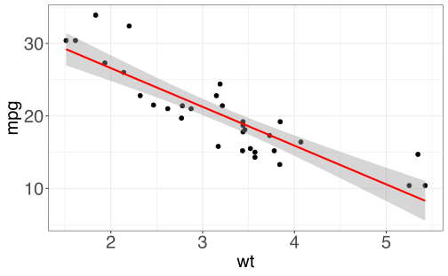
# # Guardar el gráfico en un archivo pdf
# ggsave(filename = 'linear_reg_sin_IC.pdf') # 4.5.1.2 Ajuste de la regresión con intervalos de confianza
p <- ggplot(mtcars, aes(x = wt, y = mpg))
p <- p + geom_point(size = 2) # Use circulos de tamaño 2
p <- p + geom_smooth(method = lm, # Agregar la línea de regresión
se = TRUE, # Incluir el intervalo de confianza
size = 1,
col = "red") # Línea de color rojo
p <- p + theme_bw() # Tema de fondo blanco
p <- p + theme(axis.text = element_text(size = 20), # Aumentar el tamaño
axis.title = element_text(size = 20)) # de letra en los ejes
# Dibujar el gráfico
p 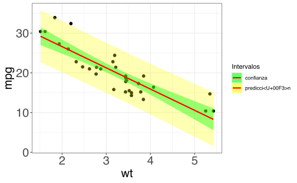
# # Guardar el gráfico en un archivo pdf
# ggsave(filename = 'linear_reg_con_IC.pdf') # 4.5.1.3 Ajuste de la regresión con intervalos de confianza y predicción
# Agregamos a mtcars el intervalo de
# predicci<U+00F3>n para cada dato
mtcars.pred <- data.frame(mtcars, predict(lm.r, interval = "prediction"))
p <- ggplot(mtcars.pred, aes(x = wt, y = mpg))
# Use circulos de tama<U+00F1>o 2
p <- p + geom_point(size = 2)
# Agregue una banda de tama<U+00F1>o [lwr, upr]
# para cada punto y llamela 'predicci<U+00F3>n'
p <- p + geom_ribbon(aes(ymin = lwr, ymax = upr, fill = "predicci<U+00F3>n"),
alpha = 0.3)
# Agregue el intervalo de confianza usual y llame
# a ese intervalo 'confianza'
p <- p + geom_smooth(method = lm, aes(fill = "confianza"),
size = 1, col = "red")
# Para agregar bien las leyendas
p <- p + scale_fill_manual("Intervalos", values = c("green",
"yellow"))
p <- p + theme_bw()
p <- p + theme(axis.text = element_text(size = 20),
axis.title = element_text(size = 20))
# Dibujar el gr<U+00E1>fico
p# # Guardar el gr<U+00E1>fico en un archivo pdf
# ggsave(filename = 'linear_reg_con_IC_IP.pdf') #Repitamos el mismo ejercicio anterior pero con un caso más sencillo.
n <- 1000
X <- runif(n, 0, 10)
Y <- 10 + sin(5 * X) + X + rnorm(1000, 0, 1)
toyex.initial <- data.frame(X, Y) %>%
arrange(X)
plot(toyex.initial)lm.toyex.initial <- lm(Y ~ X, data = toyex.initial)
summary(lm.toyex.initial)##
## Call:
## lm(formula = Y ~ X, data = toyex.initial)
##
## Residuals:
## Min 1Q Median 3Q Max
## -3.7527 -0.7968 0.0494 0.8602 3.6230
##
## Coefficients:
## Estimate Std. Error t value Pr(>|t|)
## (Intercept) 9.98910 0.07767 128.6 <2e-16 ***
## X 0.99973 0.01319 75.8 <2e-16 ***
## ---
## Signif. codes: 0 '***' 0.001 '**' 0.01 '*' 0.05 '.' 0.1 ' ' 1
##
## Residual standard error: 1.195 on 998 degrees of freedom
## Multiple R-squared: 0.852, Adjusted R-squared: 0.8519
## F-statistic: 5746 on 1 and 998 DF, p-value: < 2.2e-16toyex.pred.initial <- data.frame(toyex.initial, predict(lm.toyex.initial,
interval = "prediction"))Ahora, quisiera generar muchas muestras del mismo experimento
toyex.pred <- NULL
for (i in 1:10) {
X <- runif(n, 0, 10)
Y <- 10 + sin(5 * X) + X + rnorm(1000, 0, 1)
toyexi <- data.frame(im = i, X, Y)
toyexi <- toyexi %>%
arrange(X)
toyex.pred <- bind_rows(toyex.pred, data.frame(toyexi,
predict(lm.toyex.initial, interval = "prediction")))
}
for (i in 1:10) {
toyex.pred$fit <- fitted(lm(formula = Y ~ X, data = toyex.pred[toyex.pred$im ==
i, ]))
}
toyex.pred$im <- as.factor(toyex.pred$im)library(gganimate)
ggplot(data = toyex.pred, aes(x = X, y = Y)) + geom_point(size = 1) +
geom_smooth(data = toyex.initial, method = lm,
mapping = aes(fill = "confianza"), size = 1,
col = "red") + geom_ribbon(data = toyex.pred.initial,
mapping = aes(x = X, ymin = lwr, ymax = upr, fill = "predicci<U+00F3>n",
), alpha = 0.3) + labs(title = paste0("Muestra #: {closest_state}")) +
scale_fill_manual("Intervalos", values = c("green",
"yellow")) + theme_bw() + theme(axis.text = element_text(size = 20),
axis.title = element_text(size = 20)) + transition_states(im)4.6 Interacciones
Suponga un modelo lineal con dos covariables:
\[\begin{equation*} Y = \beta_{0} + \beta_{1} X_{1} + \beta_{2} X_{2} + \varepsilon \end{equation*}\]
Aumentemos en 1 unidad \(X_{1}\) y rescribamos el modelo original
\[\begin{align*} Y &= \beta_{0} + \beta_{1} (X_{1}+1) + \beta_{2} X_{2} + \varepsilon \\ Y &= (\beta_{0} + \beta_{1}) + \beta_{1} X_{1} + \beta_{2} X_{2} + \varepsilon \\ Y &= \tilde{\beta_{0}} + \beta_{1} X_{1} + \beta_{2} X_{2} + \varepsilon \\ \end{align*}\]
Es decir, el modelo original sigue siendo teniendo la misma estructura aunque hayamos cambiado el \(X_1\). Este fenómeno ocurre siempre bajo transformaciones lineales de las variables.
Ahora suponga que tenemos el siguiente modelo: \[\begin{align*} Y = \beta_{0} + \beta_{1} X_{1} X_{2} +\varepsilon \\ \end{align*}\]
y aumentamos en 1 el \(X_1\):
\[\begin{align*} Y &= \beta_{0} + \beta_{1} (X_{1}+1) X_{2} +\varepsilon \\ Y &= \beta_{0} + \beta_{1}X_{2} + \beta_{1} X_{1} X_{2} +\varepsilon \\ \end{align*}\]
Note que en este caso no se logra mantener el mismo tipo de estructura. Una forma de arreglar el problema es incluir las interacciones junto con todos sus efectos principales.
\[\begin{equation*} Y = \beta_{0} + \beta_{1}X_{1} + \beta_{2} X_{2} + \beta_{3} X_{1} X_{2} +\varepsilon \\ \end{equation*}\]
Este modelo se le conoce como modelo lineal con interacciones (caso de 2 covariables). Este modelo considera la posible interacción entre las covariables \(X_1\) y \(X_2\) que permiten cambiar tanto el intercepto como las pendientes de los efectos principales.
Principio de jerarquía. Con el fin de mantener la estructura del modelo lineal, siempre es necesario incluir los efectos principales cuando se determina que una interacción entre ellos es significativa.
Ejercicio 4.3 Compruebe que para el caso anterior, si aumenta en una unidad \(X_{1}\), el modelo preserva su estructura.
4.6.1 Laboratorio
Generamos una base de datos nueva con solamente wt centrado
# La funci<U+00F3>n across y where solo funciona
# solo para dplyr 1.0 Si tienen otra
# versi<U+00F3>n, pueden usar mutate_if
mtcars_centered <- mtcars %>%
mutate(across("wt", scale, scale = FALSE, center = TRUE))
# Si no se tiene dplyr 1.0
mtcars_centered <- mtcars %>%
mutate_at("wt", scale, scale = FALSE, center = TRUE)Compare lo que ocurre con los coeficientes de la base original y la nueva base.
summary(lm(mpg ~ wt + disp, data = mtcars))##
## Call:
## lm(formula = mpg ~ wt + disp, data = mtcars)
##
## Residuals:
## Min 1Q Median 3Q Max
## -3.4087 -2.3243 -0.7683 1.7721 6.3484
##
## Coefficients:
## Estimate Std. Error t value Pr(>|t|)
## (Intercept) 34.96055 2.16454 16.151 4.91e-16 ***
## wt -3.35082 1.16413 -2.878 0.00743 **
## disp -0.01773 0.00919 -1.929 0.06362 .
## ---
## Signif. codes: 0 '***' 0.001 '**' 0.01 '*' 0.05 '.' 0.1 ' ' 1
##
## Residual standard error: 2.917 on 29 degrees of freedom
## Multiple R-squared: 0.7809, Adjusted R-squared: 0.7658
## F-statistic: 51.69 on 2 and 29 DF, p-value: 2.744e-10summary(lm(mpg ~ wt + disp, data = mtcars_centered))##
## Call:
## lm(formula = mpg ~ wt + disp, data = mtcars_centered)
##
## Residuals:
## Min 1Q Median 3Q Max
## -3.4087 -2.3243 -0.7683 1.7721 6.3484
##
## Coefficients:
## Estimate Std. Error t value Pr(>|t|)
## (Intercept) 24.18011 2.18221 11.081 6.12e-12 ***
## wt -3.35082 1.16413 -2.878 0.00743 **
## disp -0.01773 0.00919 -1.929 0.06362 .
## ---
## Signif. codes: 0 '***' 0.001 '**' 0.01 '*' 0.05 '.' 0.1 ' ' 1
##
## Residual standard error: 2.917 on 29 degrees of freedom
## Multiple R-squared: 0.7809, Adjusted R-squared: 0.7658
## F-statistic: 51.69 on 2 and 29 DF, p-value: 2.744e-10Supongamos que formamos un modelo con solo la interacción y no incluimos los efectos directos.
summary(lm(mpg ~ wt * disp - wt - disp, data = mtcars))##
## Call:
## lm(formula = mpg ~ wt * disp - wt - disp, data = mtcars)
##
## Residuals:
## Min 1Q Median 3Q Max
## -4.259 -2.603 -1.657 2.165 8.589
##
## Coefficients:
## Estimate Std. Error t value Pr(>|t|)
## (Intercept) 26.2621926 1.0418029 25.208 < 2e-16 ***
## wt:disp -0.0072897 0.0009721 -7.499 2.33e-08 ***
## ---
## Signif. codes: 0 '***' 0.001 '**' 0.01 '*' 0.05 '.' 0.1 ' ' 1
##
## Residual standard error: 3.614 on 30 degrees of freedom
## Multiple R-squared: 0.6521, Adjusted R-squared: 0.6405
## F-statistic: 56.24 on 1 and 30 DF, p-value: 2.329e-08summary(lm(mpg ~ wt * disp - wt - disp, data = mtcars_centered))##
## Call:
## lm(formula = mpg ~ wt * disp - wt - disp, data = mtcars_centered)
##
## Residuals:
## Min 1Q Median 3Q Max
## -5.878 -2.775 -1.162 2.409 11.150
##
## Coefficients:
## Estimate Std. Error t value Pr(>|t|)
## (Intercept) 21.460008 0.859706 24.962 < 2e-16 ***
## wt:disp -0.013127 0.002714 -4.837 3.69e-05 ***
## ---
## Signif. codes: 0 '***' 0.001 '**' 0.01 '*' 0.05 '.' 0.1 ' ' 1
##
## Residual standard error: 4.592 on 30 degrees of freedom
## Multiple R-squared: 0.4382, Adjusted R-squared: 0.4195
## F-statistic: 23.4 on 1 and 30 DF, p-value: 3.686e-05El modelo correcto sería el siguiente:
summary(lm(mpg ~ wt + disp + wt * disp, data = mtcars))##
## Call:
## lm(formula = mpg ~ wt + disp + wt * disp, data = mtcars)
##
## Residuals:
## Min 1Q Median 3Q Max
## -3.267 -1.677 -0.836 1.351 5.017
##
## Coefficients:
## Estimate Std. Error t value Pr(>|t|)
## (Intercept) 44.081998 3.123063 14.115 2.96e-14 ***
## wt -6.495680 1.313383 -4.946 3.22e-05 ***
## disp -0.056358 0.013239 -4.257 0.00021 ***
## wt:disp 0.011705 0.003255 3.596 0.00123 **
## ---
## Signif. codes: 0 '***' 0.001 '**' 0.01 '*' 0.05 '.' 0.1 ' ' 1
##
## Residual standard error: 2.455 on 28 degrees of freedom
## Multiple R-squared: 0.8501, Adjusted R-squared: 0.8341
## F-statistic: 52.95 on 3 and 28 DF, p-value: 1.158e-11summary(lm(mpg ~ wt + disp + wt * disp, data = mtcars_centered))##
## Call:
## lm(formula = mpg ~ wt + disp + wt * disp, data = mtcars_centered)
##
## Residuals:
## Min 1Q Median 3Q Max
## -3.267 -1.677 -0.836 1.351 5.017
##
## Coefficients:
## Estimate Std. Error t value Pr(>|t|)
## (Intercept) 23.183772 1.857605 12.480 5.87e-13 ***
## wt -6.495680 1.313383 -4.946 3.22e-05 ***
## disp -0.018699 0.007741 -2.416 0.02248 *
## wt:disp 0.011705 0.003255 3.596 0.00123 **
## ---
## Signif. codes: 0 '***' 0.001 '**' 0.01 '*' 0.05 '.' 0.1 ' ' 1
##
## Residual standard error: 2.455 on 28 degrees of freedom
## Multiple R-squared: 0.8501, Adjusted R-squared: 0.8341
## F-statistic: 52.95 on 3 and 28 DF, p-value: 1.158e-11Ejercicio 4.4 Repita los comandos anteriores con la siguiente base de datos y explique los resultados.
mtcars_scaled <- mtcars %>%
mutate(across(c("wt", "disp"), scale, scale = TRUE,
center = TRUE))4.7 Supuestos
El modelo lineal tiene los siguientes supuestos:
- Linealidad
- En la forma lineal de la relación variable dependiente-covariables.
- Errores centrados
- \(\mathbb{E}(\varepsilon_i) = 0\).
- Homocedasticidad
- \(\text{Var}(\varepsilon_t) = \mathbb{E}(\varepsilon_t - \mathbb{E} \varepsilon_t)^2 = \mathbb{E} \varepsilon_t^2 = \sigma^2\) para todo \(t\). Es decir, la varianza del modelo (error irreducible) no depende de las variables independientes u otro factor.
- Normalidad de los residuos
- \(\varepsilon \sim N(0, \sigma^2 )\).
- Independencia de los errores
- \(\text{Cov}(\varepsilon_t,\varepsilon_s ) = \mathbb{E} (\varepsilon_t - \mathbb{E} \varepsilon_t) (\varepsilon_s - \mathbb{E} \varepsilon_s) = \mathbb{E} \varepsilon_t \varepsilon_s = 0\) para todo \(t,s\) con \(t\neq s\): si para una observación dada existe un error, este no debe depender del error de otra observación.
Si este supuesto no se cumple puede provocar que los errores estándar en intervalos de confianza y predicción sean subestimados. Es decir que un intervalo del 95% tendrá un margen de error menor y se rechazaría más fácilmente la hipotesis nula de las pruebas \(t\) y \(F\).
- Multicolinealidad
- Se asume que la matriz \(X^TX\) es invertible, es decir \(X\) es una matriz de rango completo. Para esto cada una las covariables no debe ser linealmente dependientes, es decir \(X^TX\) de debe acercarse a ser a una matriz singular con determinante cercano a 0. Es decir que cada variable explica aproximadamente “un aspecto o característica” del modelo. Sin embargo puede pasar que varias variables expliquen la misma característica y el modelo se vuelve inestable por decidir entre las dos variables. Por ejemplo: la temperatura en grados centigrados y farenheit.
Esto generaría que \(\mathrm{Var}\left(\beta\right)\) sea alto ya que \[\begin{equation*} \text{Var}(\beta) = \sigma^2(X^{\top}X)^{-1} \end{equation*}\]
- Más observaciones que predictores
- En caso contrario existen formas alternativas de definir el problema de regresión. (Volveremos a esto cuando veamos selección de modelos)
4.7.1 Chequeos básicos de las hipótesis de regresión lineal
4.7.1.1 Linealidad, Errores con esperanza nula, Homocedasticidad
Estos supuestos se puede constantar a partir de un gráfico de residuos ya que en el caso ideal \(e_{i} = \hat{Y}_{i}- Y_{i} \perp \hat{Y}_{i}\). Entonces si este gráfico presenta patrones, quiere indicar que la regresión, no es lineal, que los errores no tienen esperanza nula y que la varianza no es constante.
Se pueden aplicar transformaciones para resolver estos problemas. Normalmente se usan transformaciones como raiz cuadrada o logaritmos.
Ejemplo 4.2 Caso ideal
x <- rnorm(1000)
y <- x + rnorm(1000, sd = 0.5)
fit <- lm(y ~ x)
plot(x, y)
abline(a = coef(fit)[1], b = coef(fit)[2], col = "red")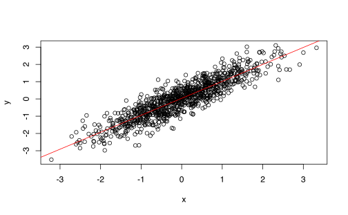
plot(fitted(fit), residuals(fit))
abline(h = 0, col = "red")Figura 4.1: Gr<U+00E1>fico de residuos caso lineal
Caso no-lineal
x <- exp(rnorm(1000))
y <- log(x) + rnorm(1000, sd = 0.5)
fit <- lm(y ~ x)
plot(x, y)
abline(a = coef(fit)[1], b = coef(fit)[2], col = "red")plot(fitted(fit), residuals(fit))
abline(h = 0, col = "red")
Figura 4.2: Gr<U+00E1>fico de residuos caso no-lineal
Caso no-lineal transformado
xt <- log(x)
fit <- lm(y ~ xt)
plot(xt, y)
abline(a = coef(fit)[1], b = coef(fit)[2], col = "red")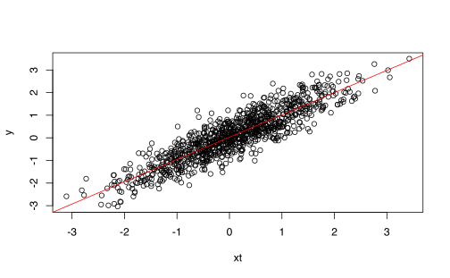
plot(fitted(fit), residuals(fit))
abline(h = 0, col = "red")4.7.1.2 Independencia de los errores
En este caso defina \(\rho(k) = \text{Cov}(\varepsilon_i,\varepsilon_{i+k} )\). Si los residuos son independientes, entonces debe ocurrir que
\[\begin{equation*} \rho(k) = \begin{cases} 1 & k=0\\ 0 & k\neq 0. \end{cases} \end{equation*}\]
Se calcula la función de autocorrelación empírica y se grafica para analizar su comportamiento
Caso ideal
x <- rnorm(1000)
y <- 1 + x + rnorm(1000, sd = 1)fit <- lm(y ~ x)
plot(x, y)
abline(a = coef(fit)[1], b = coef(fit)[2], col = "red")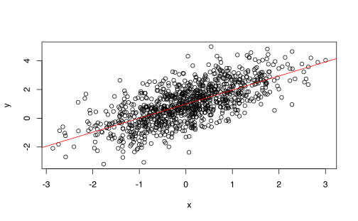
summary(fit)##
## Call:
## lm(formula = y ~ x)
##
## Residuals:
## Min 1Q Median 3Q Max
## -3.2769 -0.6893 0.0203 0.6654 2.9470
##
## Coefficients:
## Estimate Std. Error t value Pr(>|t|)
## (Intercept) 1.05887 0.03177 33.33 <2e-16 ***
## x 0.99015 0.03269 30.29 <2e-16 ***
## ---
## Signif. codes: 0 '***' 0.001 '**' 0.01 '*' 0.05 '.' 0.1 ' ' 1
##
## Residual standard error: 1.005 on 998 degrees of freedom
## Multiple R-squared: 0.4789, Adjusted R-squared: 0.4784
## F-statistic: 917.2 on 1 and 998 DF, p-value: < 2.2e-16acf(residuals(fit))
Caso errores auto-correlacionados
x <- rnorm(1000)
y <- 1 + x + diffinv(rnorm(999, sd = 1), lag = 1)fit <- lm(y ~ x)
plot(x, y)
abline(a = coef(fit)[1], b = coef(fit)[2], col = "red")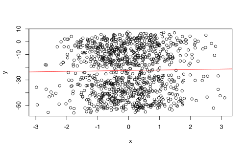
summary(fit)##
## Call:
## lm(formula = y ~ x)
##
## Residuals:
## Min 1Q Median 3Q Max
## -29.515 -7.332 -0.650 8.439 32.911
##
## Coefficients:
## Estimate Std. Error t value Pr(>|t|)
## (Intercept) 25.7818 0.4513 57.127 < 2e-16 ***
## x 2.0390 0.4489 4.543 6.23e-06 ***
## ---
## Signif. codes: 0 '***' 0.001 '**' 0.01 '*' 0.05 '.' 0.1 ' ' 1
##
## Residual standard error: 14.27 on 998 degrees of freedom
## Multiple R-squared: 0.02026, Adjusted R-squared: 0.01928
## F-statistic: 20.64 on 1 and 998 DF, p-value: 6.234e-06acf(residuals(fit))4.7.1.3 Normalidad de los errores
Este hipótesis es crucial para hacer las pruebas \(t\) y \(F\) que vimos anteriormente.
Para revisar si se cumple solo basta hacer una qqplot de los residuos.
Caso ideal
x <- rnorm(1000)
y <- 1 + x + rnorm(1000, sd = 1)
fit <- lm(y ~ x)qqnorm(residuals(fit), asp = 1)
qqline(residuals(fit), col = "red")Caso errores auto-correlacionados
x <- rnorm(1000)
y <- 1 + x + diffinv(rnorm(999, sd = 1), lag = 1)
fit <- lm(y ~ x)qqnorm(residuals(fit), asp = 0)
qqline(residuals(fit), col = "red")Caso no-lineal
x <- rnorm(1000)
y <- x^2 + rnorm(1000, sd = 0.5)
fit <- lm(y ~ x)qqnorm(residuals(fit), asp = 0)
qqline(residuals(fit), col = "red")x <- rnorm(1000)
y <- x^2 + rnorm(1000, sd = 0.5)
fit <- lm(y ~ x + I(x^2))
summary(fit)##
## Call:
## lm(formula = y ~ x + I(x^2))
##
## Residuals:
## Min 1Q Median 3Q Max
## -1.86219 -0.31537 -0.01142 0.33770 1.68161
##
## Coefficients:
## Estimate Std. Error t value Pr(>|t|)
## (Intercept) 0.02710 0.01967 1.377 0.169
## x -0.02398 0.01598 -1.500 0.134
## I(x^2) 0.98615 0.01185 83.250 <2e-16 ***
## ---
## Signif. codes: 0 '***' 0.001 '**' 0.01 '*' 0.05 '.' 0.1 ' ' 1
##
## Residual standard error: 0.5013 on 997 degrees of freedom
## Multiple R-squared: 0.8744, Adjusted R-squared: 0.8741
## F-statistic: 3469 on 2 and 997 DF, p-value: < 2.2e-16qqnorm(residuals(fit), asp = 0)
qqline(residuals(fit), col = "red")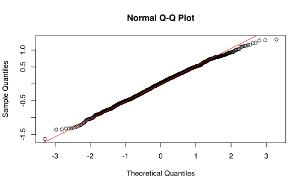
4.7.1.4 Multicolinealidad
Hay dos formas de detectar multicolinealidad
Analizar la matriz de correlaciones de las variables (solamente detecta colinealidad entre pares).
Analizar la correlación multiple entre un predictor y el resto.
Defina \(R^{2}_{X_{j}\vert X_{-j}}\) como el \(R^{2}\) de la regresión multiple entre \(X_{j}\) vs el resto de covariables.
Si \(R^{2}_{X_{j}\vert X_{-j}}\) es cercano a 1 entonces hay alta correlación entre \(X_j\) y el resto.
Defina el factor de inflación de la varianza como:
\[\begin{equation*} \mathrm{VIF}(\hat{\beta}_{j}) = \frac{1}{1-R^{2}_{X_{j}\vert X_{-j}}} \end{equation*}\]
Si \(\mathrm{VIF}\) es alto
- Quitar las variables
- Combinar variables
Hay muchos paquetes que tienen implementado la función vif (car, rms, entre otros).
Caso variables colineales
La variable wt está en unidades de 1000lb. La convertimos a Kilogramos.
mtcars_kg <- mtcars %>%
mutate(wt_kg = wt * 1000 * 0.4535 + rnorm(32))
fit_kg <- lm(mpg ~ disp + wt + wt_kg, data = mtcars_kg)
summary(fit_kg)##
## Call:
## lm(formula = mpg ~ disp + wt + wt_kg, data = mtcars_kg)
##
## Residuals:
## Min 1Q Median 3Q Max
## -3.8102 -2.1545 -0.7507 1.5108 5.9400
##
## Coefficients:
## Estimate Std. Error t value Pr(>|t|)
## (Intercept) 3.516e+01 2.192e+00 16.038 1.21e-15 ***
## disp -1.779e-02 9.249e-03 -1.923 0.0647 .
## wt -2.325e+02 2.870e+02 -0.810 0.4248
## wt_kg 5.051e-01 6.328e-01 0.798 0.4314
## ---
## Signif. codes: 0 '***' 0.001 '**' 0.01 '*' 0.05 '.' 0.1 ' ' 1
##
## Residual standard error: 2.935 on 28 degrees of freedom
## Multiple R-squared: 0.7858, Adjusted R-squared: 0.7629
## F-statistic: 34.24 on 3 and 28 DF, p-value: 1.659e-09library(car)
options(scipen = 1000)
VIFs <- vif(fit_kg)
VIFs <- as.data.frame(VIFs) %>%
rownames_to_column(var = "vars")
ggplot(VIFs, aes(x = vars, y = VIFs, group = 1)) +
geom_point() + geom_line() + theme_minimal(base_size = 16)4.7.2 Otros chequeos importantes
4.7.2.1 Puntos extremos
Estos puntos son aquellos que \(Y_i\) esta lejos de \(\hat{Y}_i\), es decir son puntos en donde los residuos son particularmente muy altos.
Se puede hacer un gráfico de los residuos vs los valores ajustados como en 4.1 y 4.2.
¿Qué tan grande deben ser los residuos?
Solución: Se debe escalar los residuos adecuadamente.
Se construyen los residuos semi-studendizados
\[\begin{equation*} r_{i}^{s} = \frac{e_{i}}{\sqrt{\mathrm{Var}\left(e_{i}\right)}} \end{equation*}\]
donde \(e_i=Y_i-\hat Y_i\). Como \(H=X(X^{\top}X)^{-1}X^{\top}\) es la matriz de proyección entonces sabemos que
\[\begin{align*} \hat{Y}&= H Y \\ e &= Y - \hat{Y} \end{align*}\]
Entonces tenemos que
\[\begin{align*} \mathrm{Var}\left(e\right) &= \mathrm{Var}\left((I-H)Y\right)\\ &= (I-H)^{2}\mathrm{Var}\left(Y\right)\\ &= (I-H) \sigma^{2} \end{align*}\]
ya que \(I-H\) es idempotente. Por lo tanto
\[\begin{equation*} \mathrm{Var}\left(e_{i}\right) = (1-h_{ii}) \sigma^{2} \end{equation*}\]
Para cada observación se estandarizan los residuos de siguiente forma
\[\begin{equation*} r_{i}^{s} = \frac{e_i}{\sqrt{(1-h_{ii}) \sigma^{2}}} \end{equation*}\]
Caso sin valores extremos
x <- rnorm(1000)
y <- 1 + x + rnorm(1000, sd = 0.5)
fit <- lm(y ~ x)
X <- model.matrix(y ~ x)
H <- X %*% solve(t(X) %*% X) %*% t(X)
I <- diag(1, nrow = 1000)
I_H <- I - H
r_sdnt <- residuals(fit)/sqrt(diag(I_H) * var(y))
plot(fitted(fit), r_sdnt)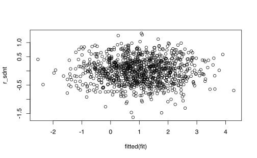
fit##
## Call:
## lm(formula = y ~ x)
##
## Coefficients:
## (Intercept) x
## 0.9788 0.9684Caso con valores extremos
x <- rnorm(1000)
y <- 1 + x + rnorm(1000, sd = 0.5)
y[1:5] <- runif(5, 30, 40)
fit <- lm(y ~ x)
X <- model.matrix(y ~ x)
H <- X %*% solve(t(X) %*% X) %*% t(X)
I <- diag(1, nrow = 1000)
I_H <- I - H
r_sdnt <- residuals(fit)/sqrt(diag(I_H) * var(y))
plot(fitted(fit), r_sdnt)fit##
## Call:
## lm(formula = y ~ x)
##
## Coefficients:
## (Intercept) x
## 1.1556 0.94864.7.2.2 Puntos de apalancamiento (leverage)
Un outlier puede ser detectado pero aún así este puede no afectar el modelo como un todo.
El \(r_{i}^s\) puede ser alto por 2 razones:
- los residuos \(e_i\) son altos (un outlier)
- el valor \(h_{ii}\) es cercano a 1. (Se tiene que \(0\leq h_{ii}\leq 1\)).
Los valores donde \(h_{ii}\approx 1\) se les denomina de gran apalancamiento.
Como la matriz \(H\) es de idempotente y de rango completo:
\[\begin{equation*} \sum_{i=1}^{n} h_{ii} = p +1 \text{ (Los predictores más el intercepto) } \end{equation*}\]
Regla empírica: Si \(h_{ii}>\frac{p+1}{n}\) entonces decimos que el punto de gran apalancamiento.
4.7.2.2.1 Distancia de Cook.
La distancia de Cook mide la influencia de las observaciones con respecto al ajuste del modelo lineal con \(p\) variables. Esta se define como:
\[ \displaystyle D_i = \frac{\sum\limits_{j=1}^n (\hat{Y}_j - \hat{Y}_{j(-i)})^2}{(p+1) \sigma^2} \]
donde \(\hat{Y}_{j(-i)}\) significa el ajuste del modelo lineal, removiendo la observación \(i\)-ésima.
Caso base
set.seed(42)
apa_df = data.frame(x = 1:10, y = 10:1 + rnorm(n = 10))modelo <- lm(y ~ x, data = apa_df)
coef(modelo)## (Intercept) x
## 11.3801152 -0.9696033plot(modelo, 5, col = c(rep("black", 10), "red"), cex = 2,
pch = 16)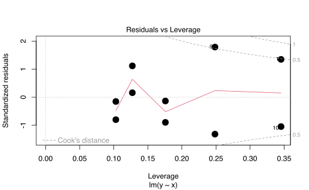
plot(hatvalues(modelo), col = c(rep("black", 10), "red"),
cex = 2, pch = 16)
abline(h = 2/10, col = "blue")plot(apa_df, col = c(rep("black", 10), "red"), cex = 2,
pch = 16)
abline(a = coef(modelo)[1], b = coef(modelo)[2], col = "blue")Bajo apalancamiento, residuos grandes, influencia pequeña
p_1 <- c(5.4, 11)
apa_df_1 <- rbind(apa_df, p_1)
modelo_1 <- lm(y ~ x, data = apa_df_1)
coef(modelo_1)## (Intercept) x
## 11.8509232 -0.9749534plot(modelo_1, 5, col = c(rep("black", 10), "red"),
cex = 2, pch = 16)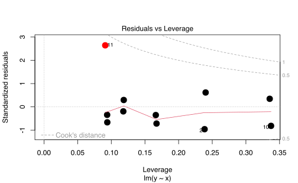
plot(hatvalues(modelo_1), col = c(rep("black", 10),
"red"), cex = 2, pch = 16)
abline(h = 2/11, col = "blue")plot(apa_df_1, col = c(rep("black", 10), "red"), cex = 2,
pch = 16)
abline(a = coef(modelo)[1], b = coef(modelo)[2], col = "blue")
abline(a = coef(modelo_1)[1], b = coef(modelo_1)[2],
col = "red")Alto apalancamiento, residuo pequeño, influencia pequeña
p_2 <- c(18, -5.7)
apa_df_2 <- rbind(apa_df, p_2)
modelo_2 <- lm(y ~ x, data = apa_df_2)
coef(modelo_2)## (Intercept) x
## 11.2888153 -0.9507397plot(modelo_2, 5, col = c(rep("black", 10), "red"),
cex = 2, pch = 16)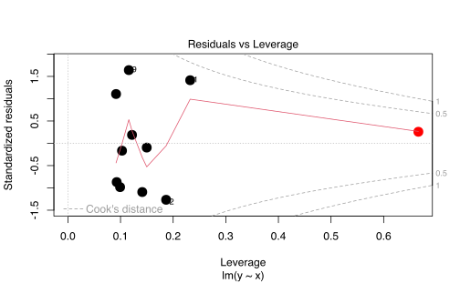
plot(hatvalues(modelo_2), col = c(rep("black", 10),
"red"), cex = 2, pch = 16)
abline(h = 2/11, col = "blue")plot(apa_df_2, col = c(rep("black", 10), "red"), cex = 2,
pch = 16)
abline(a = coef(modelo)[1], b = coef(modelo)[2], col = "blue")
abline(a = coef(modelo_2)[1], b = coef(modelo_2)[2],
col = "red")
Alto apalancamiento, residuo altos, influencia grande
p_3 <- c(14, 5.1)
apa_df_3 <- rbind(apa_df, p_3)
modelo_3 <- lm(y ~ x, data = apa_df_3)
coef(modelo_3)## (Intercept) x
## 9.6572209 -0.5892241plot(modelo_3, 5, col = c(rep("black", 10), "red"),
cex = 2, pch = 16)
plot(hatvalues(modelo_3), col = c(rep("black", 10),
"red"), cex = 2, pch = 16)
abline(h = 2/11, col = "blue")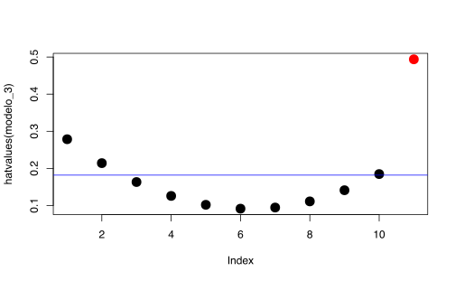
plot(apa_df_3, col = c(rep("black", 10), "red"), cex = 2,
pch = 16)
abline(a = coef(modelo)[1], b = coef(modelo)[2], col = "blue")
abline(a = coef(modelo_3)[1], b = coef(modelo_3)[2],
col = "red")
`?`(stats:::plot.lm)plot(modelo_3, which = 1:6) 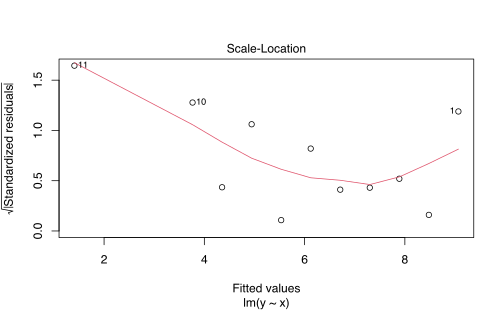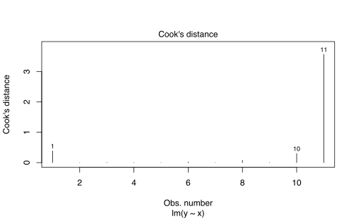
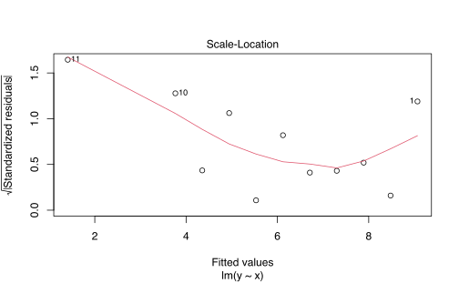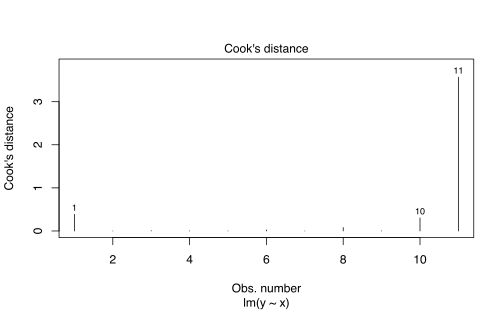
plot(modelo, which = 1:6)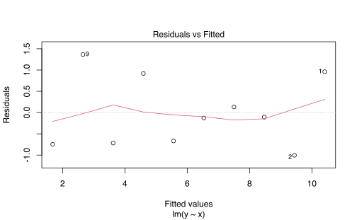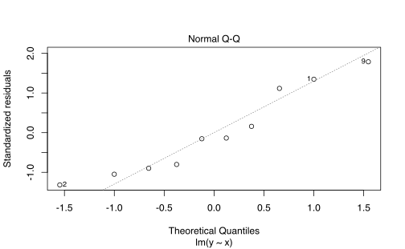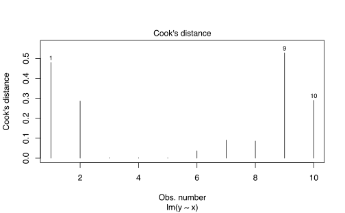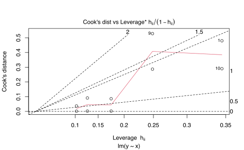